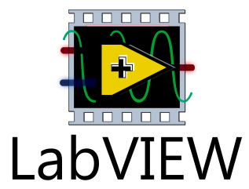
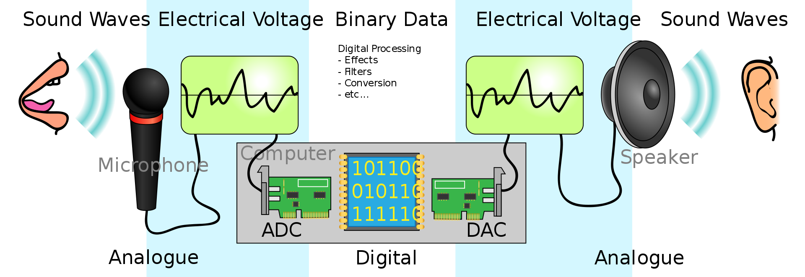
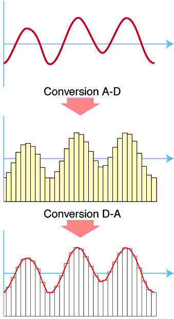
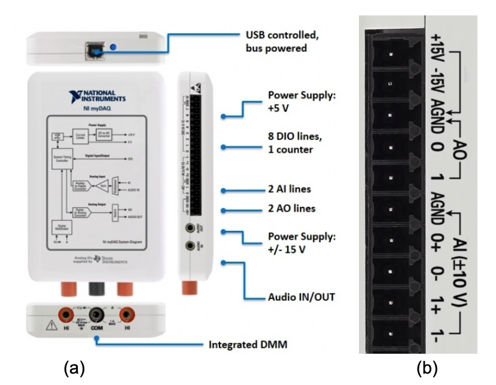
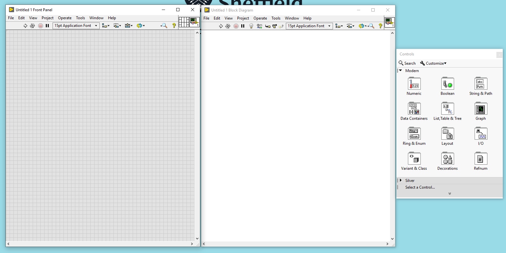
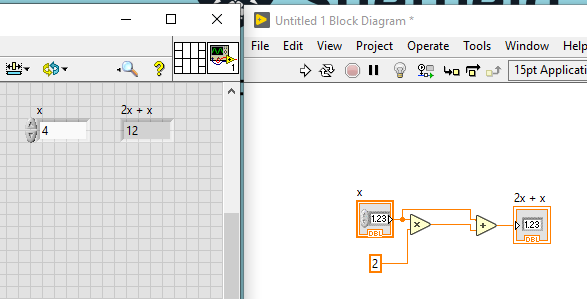
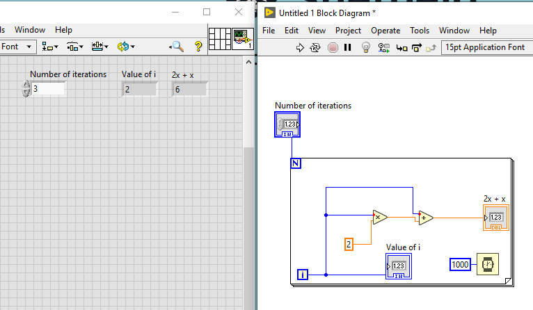
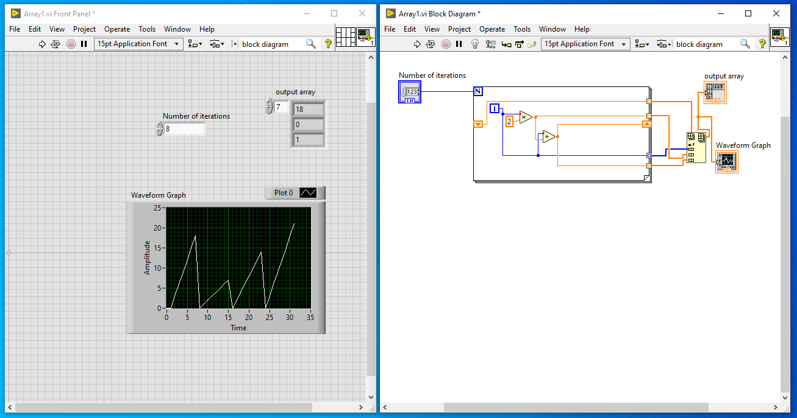

An Introduction to LabView#
Dr Ross Mathieson, Dr Mark Quinn & Dr Stephen Collins.

Learning Objectives:#
Understand how to interact with the LabView,
Be able to perform simple numeric calculations in LabView,
Be able to create for and while loops in LabView,
Be able to collect, visualise and export experimental data using a myDAQ and LabView.
What is LabView?#
As scientists, we record measurements to help us understand nature. Once we have a bunch of measurements, we refer to it as data. Up to now, you have been recording measurements by hand and then copying the data onto a computer for analysis. What if the computer could also perform the measurements? Then, much of your workflow from data acquisition to data analysis could be automated. Hence, more data, faster results and more potential discoveries for you!
Computer interfacing gives you the ability to link your instruments or sensors to computers. Typically some interface hardware is needed. Popular examples include Raspberry Pi, Arduino and myDAQ. The latter is produced by NI and is controlled using a programming language called LabView.
Labview is a graphical programming language. Instead of lines of code, you connect up icons which represent the data, loops and functions of a typical programme. When run, the programme displays an interactive graphical interface showing data together with controls. Data acquisition and control via LabView is very common in professional science and engineering. It is also used in laboratory work in level 2 labs. So this week, we would like to introduce you to the basics of using LabView.
Background Theory#
Computer interfacing is the linking together of sensors and computers. While computers operate digitally, most measurement sensors produce analogue signals. In many cases, these signals are voltages such as the output of microphones or light gates. Hence, converting between digital and analog signals is a key part of computer interfacing. The figure below shows a clear example of this process - the sound wave is measured and then reproduced by converting an analogue signal to a digital signal and back again.

By measuring the amplitude of an analogue signal at various points along the waveform (e.g. as a function of time), we can “transcribe” it as a series of measurements which form the composition of the the digital signal. An example of this is shown in the figure below (credit for figures).

Data Aquisition#
Hardware#
Data acquisition (DAQ) hardware plugs into a computer via a usb port. The DAQ interfaces between the computer and the outside world. It does this by converting analog signals from sensors into digital signals for the computer to process. Conversely, the DAQ can send digital signals from the computer to external devices by converting them to analog.
In this session we will use DAQ hardware called myDAQ to interface with the computer. Inside the myDAQ is an analogue to digital converter (ADC) and a digital to analogue converter (DAC) to receive and send analog signals respectively. The myDAQ is designed for students and educational use and is shown in Figure 1. It connects to the computer via USB and provide several different connectors:
AI: Analogue input via ADC - can connect up to two input. See AI 0 and AI 1 connections.
AO: Analogue output via DAC - can connect up to two output. See AO 0 and AO 1 connections.
DIO: Digital input and output - can connect up to 8 digital inputs/outputs. See DIO 0-7 connections.
The myDAQ system connects to a computer via USB. This enables input and output of analogue (AI, AO) and digital signals (DIO). (a) The connectors for analogue input and outputs are shown. (b) Here the wires carrying the +/- voltage signal can be connected.

The figure above is taken from here.
Software#
DAQ hardware requires software to control the input and output of signals (e.g. LabVIEW). Here are a few key facts and ideas to bare in mind when thinking about LabView:
LabVIEW programmes are referred to as Virtual Instruments (VIs). In a sense the combination of the computer and DAQ acts as an instrument. The user can create programmes to read input signals and send digital signals to the myDAQ.
LabView is a graphical programming language, meaning that instead of writing text based code (like Python), here snippets of code are prewritten and “wired” together graphically. These snippets of code are represented as icons. This has an interesting side effect, in that the program will not allow you to connect incompatible data types together.
LabVIEW programmes enable the user to create an interface to this instrument with dials, knobs and displays. Imagine creating a programme that when run provides an interactive oscilloscope on the computer screen. Rotating the dials on the virtual instrument changes the values in the underlying graphical programme which changes the display of the waveform signal being measured by the myDAQ.
The way code is constructed is no different to text based languages. You can read from and output to text files, you can use while loops, for loops, and have access to a large library of equipment control files to allow you to interface with lab equipment.
Access to the proprietary LabVIEW software is via University Desktops or via download.
The general steps to creating a LabView programme are:
Launch LabVIEW and open a new VI. To do this simply press “File” and then “New VI”. Two windows will appear: the Block Diagram (the graphical programme) and the Front Panel (interface which displays the input and output of the programme).

Next, right click on the Front Panel. This will show the control palette from which you can select and add dials and displays to the Front Panel.
Right click on the Block Diagram to select and add programming objects such as data types, functions, coding logic, loops, etc.
Use DAQ Assist to include myDAQ so that we can incoroproate measured data into our LabView script.
Wire the components in the Block Diagram as these move data between the objects.
Click on the run button to run the program.
These steps by themselves may not make a great deal of sense right now, but you may wish to refer back to them later once you have had a go at making your own LabView script. As LabView feels very different to the Python coding we have done so far, we provide a practical walkthrough below to build a simple script to perform calculations and use the myDAQ. You will then build on this knowledge base in your lab sessions.
Practical Walkthrough#
Mathematics#
By following the steps of the proceeding walkthrough, you should understand the steps for building your very first VI. First we will look at how to do some simple maths. In this examle we are going to perform a calculation using the equation \( y = x + 2x \). The steps to do this are as follows:
Right click in the block diagram page to bring up the programming menu, find the mathematics section, select the multiplication and addition options.
Right click on one of the multiplication inputs, choose “create control”, right click on the other input and “create constant”, double click on on the constant and set it equal to “2”.
Right click on the output and wire it to one of the addition inputs, right click on the other addition input and connect it back to the “control” you made at the start.
Left click on the output of addition and “create indicator”.
Whilst doing this you should have noticed that 2 boxes have appeared on the front pannel, one is an input, the other is the output.
Put a number into the input box and click the run button in the toolbar (this is shaped like an arrow on the top of the page). The output will appear in the grey output box.

FOR Loop#
As is often the case when coding in Python, we may require a calculation to be run several times. In Python may do this using a FOR loop - this is also the case for LabView.
The FOR loop will run the program contained in the loop for a set number of loop iterations. Continuing from the calculation performed above, make a FOR loop by following the proceeding steps:
Right click in the block diagram, select “case structures” and then “for loop”.
Drag the loop to the appropriate size and ensure that it contains the calculation you wish repeated.
You will notice two small blue blocks, one at the top and one near the bottom, they are labelled “N” and “i”. The “N” is the number of loops to run, “i” is the loop iteration. The loop iteration starts at i=0 like all loop cases in programming.
Set the number of loops to execute. here we have options, we can either, set a constant number of loops or have a variable number of loops. We will have a variable number of loops, so right click on the input side of the “N” and “create control” you will notice the input box appear on the front pane.
For this loop, we wire the output of “i” into the calculation. This is just the same as writing in Python “for i in …”.
On the front page, set the number of loops to run, and run the program. It may prove instructive to run the program multiple times, starting with a single loop and changing the number of loops to see how the output changes.
The way the program is configured, it will use all of the processor power available to it and you will notice that the calculation is completed almost immediately. We can slow the calculation down by using a timer function (this is located in the timing function palette). We can use “wait (ms)” just place the function inside the loop structure and add a constant of 1000. The loop will execute once a second, giving us time to see the output of each iteration.

WHILE Loop#
To code a WHILE loop is a very similar operation as for the FOR loop. Unlike the FOR loop which runs for a set number of iterations, a while loop will execute until a set condition is reached, either a true or false condition. The simplest option is to add a control to the stop function in the bottom left corner of the loop. Doing this will cause a stop button to appear on the front page. The loop will run until the stop button is pressed. You will do this when integrating the myDAQ into the setup shortly.
You can also wire the stop function to a comparison function. You can look at the iteration number, the output of a calculation, the input as read from one of the myDAQ etc. and stop the calculation when a certain condition is met.
Plotting Information (Arrays)#
You might be wondering how to draw graphs, or how to pass data from one loop iteration to the next. One way to do this is to use the insert into array function and to use a shift register to pass the data out of one loop and into the next loop. We will have a go plotting one of our functions for a range of x-values:
Draw a FOR loop around it and add a control to the “N” to allow you to vary the number of iterations from the front pannel.
Wire the loop iteration into into the starting input (the multiplication calculation) for your calculation. Then wire the output into addition function.
Right click on the output of the calculation and “create indicator”. This is just the same as the first loop calculation you performed.
Now we are going to use an array and a shift register to record all the steps that the loop goes through rather than just output of the final loop. First, right click on the loop, and click “add shift register” a triangle in a box will appear on the left and right hand sides of the loop.
Now, right click to get the programming menu up, select “array” and find insert into array. As it is now, you can add one element at a time to an array. Connect the output to the shift register on the right hand side of the loop. Connect the top input n-dim array to the left hand side shift register. Don’t do anything with the index. Click on the bottom of the insert into array icon and drag it down so you have 3 inputs. Connect the first input to the loop iteration, the second to the multiplication output, and the third to the output of the addition.
Next, right click on the insert into array output and select “create indicator”, an output array will appear as an icon on the block diagram and also on the front panel. On the front panel, drag the output down so you have lots of empty boxes, run the program, and the boxes will fill with numbers. Mentally take the numbers in “chunks” of 3, these are the three inputs, loop iteration, loop iteration multiplied by 2, loop iteration x2 added to loop iteration.
See if you can get a graphical representation of this data. Right click on the front panel and choose “waveform graph”. you’ll get a zigzag pattern. Left click on the “plot 0” legend at the top of the graph and select “common plots” - then select an option that just gives you the points and you should be able to make better sense of the plot.

It is worth your while looking at the various options you can use, the functions that you can call. There are function generators to make sine waves or square waves etc, which can be output to the analogue output or the headphone socket. In the “structures” pane, you can find options for inputting code (in C) and mathematical formulae.
Activities#
Write a LabView script to determine the value of \(y\) for a given value of \(x\) according to the equation:
Using loops, modify your LabView script to determine the value of \(y\) using the calculation above for \(x\) values \(0\) through \(10\) in steps of \(1\).
Add a timer delay to the LabView script to see the output of each iteration of the calculation above.